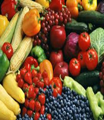

Have you ever heard people talk about holistic lifestyle? If people say they live in a holistic lifestyle, they usually means they are living in a way that is both natural to them and the world in which they live. People who live holistically often eat organic foods, keep a balanced lifestyle, and practice forms of stress relief such as yoga.

Eat Organic Food avoid eating foods that processed, full of grease,and avoid high fat,high sugar foods.Instead eat more organic vegetables and fruits.
Keep a Balanced Lifestyle The best and safest thing is to keep a balance in your life, acknowledge the great powers around us and in us. If you can do that, and live that way, you are really a wise man. ---Euripides
Less Stress Find a way to relieve your stress, Each person’s stress management relief technique is as unique as they are.Do whatever you like to relieve stress.